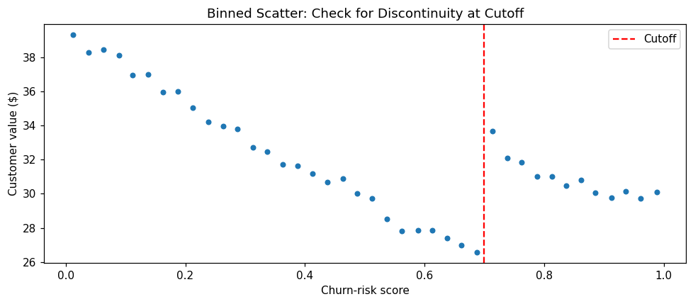
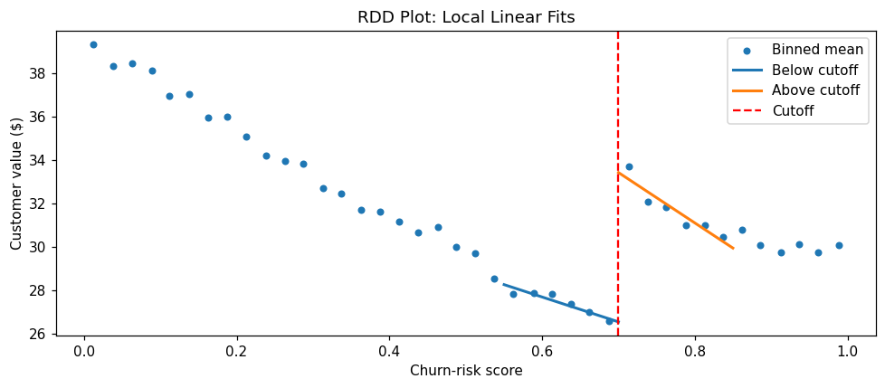
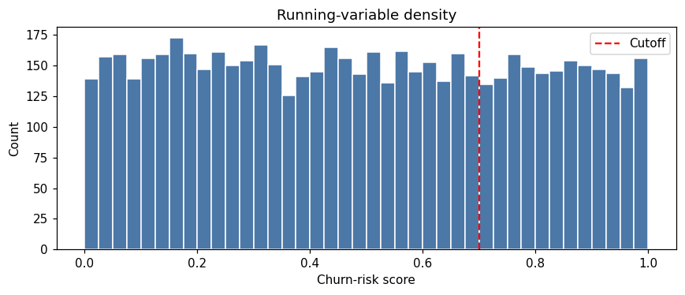
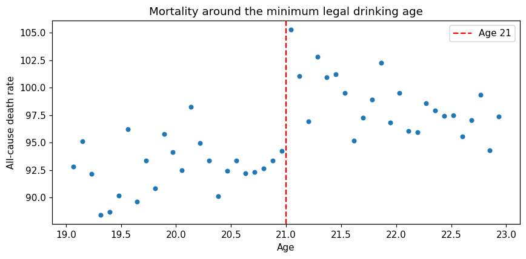

Regression Discontinuity Design (RDD) is a quasi-experimental method that exploits treatment assignment based on a threshold on a continuous running variable. Units just above and just below the cutoff are assumed to be comparable, allowing causal effect estimation at the threshold.
Overview
The Core Idea
When treatment is assigned by a threshold on a continuous score, units immediately above and below the cutoff are essentially identical except for treatment status. This creates a local randomization around the threshold, enabling causal effect estimation.
For example:
Customers with credit score ≥ 700 get approved for a loan
Students with test score ≥ 80 pass the exam
Stores with performance score below 50 get a turnaround program
Orders over $50 get free shipping
The key insight is that whether a unit ends up just above or just below the cutoff is effectively random — it depends on small fluctuations in the running variable. Comparing outcomes in a narrow window around the cutoff identifies the local average treatment effect (LATE) at the threshold.
Business Setting
RDD is ideal when:
Treatment is assigned by a clear threshold on a continuous score
The threshold is known and rule-based (not manipulated)
Units cannot precisely manipulate their score to sort around the cutoff
You have sufficient data near the cutoff for estimation
Common business examples:
Credit scoring: loan approval based on credit score thresholds
Pricing: discounts for orders above a certain amount
Performance management: interventions for underperforming stores/employees
Churn prevention: retention calls for customers above a churn-risk threshold
Academic testing: scholarships for students above a test score cutoff
The Identifying Assumptions
RDD relies on two key assumptions:
Continuity of potential outcomes: Potential outcomes \(Y(0)\) and \(Y(1)\) are continuous functions of the running variable at the cutoff. Nothing else jumps at the threshold except treatment status.
No precise manipulation: Units cannot precisely control their score to end up on one side of the cutoff. While they may influence their score generally, they cannot fine-tune it to fall just above or below the threshold.
Key Advantages
Internal validity: RDD is often considered the most credible quasi-experimental design after RCTs
Transparent: The cutoff is observable and the assumption of local randomization is intuitive
Visual: The discontinuity in outcomes at the cutoff is directly visible in plots
Local effect: Estimates the effect at the margin — exactly the policy-relevant question for threshold decisions
Falsifiable: The assumptions can be tested with density tests and covariate continuity checks
Implementation in Python
RegressionDiscontinuity fits a local linear model \(Y = a + b(R-c) + \tau D + d(R-c)D\) inside a bandwidth around the cutoff. \(\tau\) is the jump. The interval is a Bayesian bootstrap of the rows inside that window.
The setup matches the other PyCausalML tutorials: find the repository, import the package, and install the editable checkout only if the import fails.
Set Up
Code
import subprocessimport sysfrom pathlib import Pathdef _repo_root() -> Path: here = Path.cwd().resolve()for cand in [here, *here.parents]:if (cand /"pyproject.toml").is_file() and (cand /"src"/"pycausalml").is_dir():return candraiseFileNotFoundError("PyCausalML repository was not found. Run this notebook from the repository." )root = _repo_root()try:import pycausalml # noqa: F401print("PyCausalML ready.")exceptImportError: subprocess.check_call( [sys.executable, "-m", "pip", "install", "-q", "-e", f"{root}[plot]"], )print("PyCausalML installed.")print("Repository:", root)
%matplotlib inlineimport matplotlib.pyplot as pltimport numpy as npimport pandas as pdfrom pycausalml import ( RegressionDiscontinuity,)rng = np.random.default_rng(42)plt.rcParams["figure.dpi"] =110pd.set_option("display.float_format", lambda x: f"{x:,.3f}")print("Imported PyCausalML")
Imported PyCausalML
Simulated Example: Churn-Risk Threshold
We’ll simulate a scenario where customers with churn-risk score ≥ 0.7 receive a retention call. This lets us know the true effect and verify that RDD recovers it.
score D y
0 0.774 1 26.758
1 0.439 0 32.982
2 0.859 1 27.895
3 0.697 0 18.211
4 0.094 0 36.279
True effect at cutoff: $6.5
Visualize with Binned Means
Always plot first — a discontinuity you can’t see in a binned scatter is rarely robust. Binning reduces noise and makes the pattern visible.
Code
# Bin the data and compute meansrd["bin"] = pd.cut(rd.score, bins=40)binned = rd.groupby("bin", observed=True).agg( x=("score", "mean"), y=("y", "mean"))# Plotplt.figure(figsize=(9, 4))plt.scatter(binned.x, binned.y, s=18)plt.axvline(cutoff, color="red", ls="--", label="Cutoff")plt.xlabel("Churn-risk score")plt.ylabel("Customer value ($)")plt.title("Binned Scatter: Check for Discontinuity at Cutoff")plt.legend()plt.tight_layout()plt.show()

You should see a jump at the cutoff (score = 0.7). If there’s no visible discontinuity, RDD is unlikely to find a significant effect.
Local Linear Estimation
The estimator fits a straight line on each side of the cutoff, inside a bandwidth, and reads the jump at the cutoff. A narrower window reduces bias from curvature. A wider window uses more rows and tightens the interval. The summary reports the jump and a 95% Bayesian bootstrap interval.
ci_lower and ci_upper: the 95% interval from the Bayesian bootstrap
posterior_mean: the mean of those draws
The estimate should sit near the true effect of $6.5.
RDD Plot
Binned means show the raw pattern. Local linear fits on each side show the jump the estimator uses.
Code
def local_line(x, y, c, bandwidth, right):if right: mask = (x >= c) & (x <= c + bandwidth)else: mask = (x < c) & (x >= c - bandwidth) design = np.column_stack([np.ones(mask.sum()), x[mask] - c]) beta = np.linalg.lstsq(design, y[mask], rcond=None)[0] grid = np.linspace(x[mask].min(), x[mask].max(), 40)return grid, beta[0] + beta[1] * (grid - c)fig, ax = plt.subplots(figsize=(9, 4))ax.scatter(binned.x, binned.y, s=18, label="Binned mean")for right, name in [(False, "Below cutoff"), (True, "Above cutoff")]: grid, pred = local_line(rd.score.to_numpy(), rd.y.to_numpy(), cutoff, bandwidth, right) ax.plot(grid, pred, lw=2, label=name)ax.axvline(cutoff, color="red", ls="--", label="Cutoff")ax.set_xlabel("Churn-risk score")ax.set_ylabel("Customer value ($)")ax.set_title("RDD Plot: Local Linear Fits")ax.legend()fig.tight_layout()plt.show()

The plot shows binned means and a local linear fit on each side of the cutoff. The vertical gap between those lines at the cutoff is the RDD estimate. The numerical interval is in the summary above.
Validity Checks
RDD assumptions are falsifiable — we can test them with several diagnostic checks.
1. Manipulation Test (McCrary Density Test)
If units can precisely manipulate their scores to end up on one side of the cutoff, the density of the running variable will jump at the threshold. The McCrary test checks for this.
Rows in [0.65, 0.7): 303
Rows in [0.70, 0.75): 275

The null hypothesis is no manipulation (no jump in density). A significant p-value suggests manipulation, which would violate RDD assumptions.
Note: In our simulated data, there should be no manipulation (p-value > 0.05).
2. Covariate Continuity
Pre-treatment covariates should not jump at the cutoff. If they do, it suggests that units above and below the cutoff differ systematically, violating the local randomization assumption.
Let’s add a covariate (customer tenure) and test its continuity:
Code
rd["tenure"] =3+2* rd.score + rng.normal(0, 0.5, n)tenure_fit = RegressionDiscontinuity(cutoff=cutoff, bandwidth=bandwidth, n_boot=150, random_state=1)tenure_fit.fit(rd["score"].to_numpy(), rd["tenure"].to_numpy())print("Covariate continuity (tenure should not jump):")print(pd.Series(tenure_fit.summary()).round(3))
Covariate continuity (tenure should not jump):
estimate -0.020
ci_lower -0.112
ci_upper 0.083
posterior_mean -0.016
dtype: float64
The effect on tenure should be statistically insignificant (close to zero). If it’s significant, it suggests the cutoff divides different types of customers.
3. Placebo Cutoffs
Estimate the effect at fake cutoffs (e.g., 0.5, 0.6, 0.8). Effects at these placebo cutoffs should be approximately zero.
Code
placebo_cutoffs = [0.50, 0.60, 0.80]print("Placebo cutoffs (the interval should cover zero when the window excludes the real cutoff):")for fake in placebo_cutoffs: fit = RegressionDiscontinuity(cutoff=fake, bandwidth=0.08, n_boot=80, random_state=0) fit.fit(rd["score"].to_numpy(), rd["y"].to_numpy()) summary = fit.summary()print(f"Cutoff {fake:.2f}: estimate = {summary['estimate']:.3f}, "f"interval = [{summary['ci_lower']:.3f}, {summary['ci_upper']:.3f}]" )
Placebo cutoffs (the interval should cover zero when the window excludes the real cutoff):
Cutoff 0.50: estimate = -0.122, interval = [-1.469, 0.998]
Cutoff 0.60: estimate = 0.774, interval = [-0.411, 1.988]
Cutoff 0.80: estimate = -0.032, interval = [-1.461, 1.183]
4. Bandwidth Sensitivity
Check whether the estimate is stable across different bandwidth choices. The estimate should not change dramatically with reasonable bandwidth variations.
The estimates should be relatively stable across bandwidths. Large swings suggest the result is sensitive to the bandwidth choice.
Fuzzy RDD
In a sharp RDD, treatment status is deterministic at the cutoff (all units above are treated, all below are untreated). In a fuzzy RDD, crossing the threshold only increases the probability of treatment — some units above may not be treated, and some below may be treated.
For example: - Customers with score ≥ 0.7 should get a call, but not all do (some agents skip calls) - Some customers below the threshold still get calls (exceptions)
In fuzzy RDD, the cutoff becomes an instrument for treatment, and the estimand is a LATE at the cutoff (effect on compliers whose treatment status is moved by the cutoff).
Code
n_fuzzy =4000score_fuzzy = rng.uniform(0, 1, n_fuzzy)p_treat = np.where(score_fuzzy >= cutoff, 0.8, 0.2)D_fuzzy = rng.binomial(1, p_treat)y_fuzzy =40-25* score_fuzzy +8* score_fuzzy**2+ TRUE_RD * D_fuzzy + rng.normal(0, 5, n_fuzzy)jump_y = RegressionDiscontinuity(cutoff=cutoff, bandwidth=bandwidth, n_boot=120, random_state=0)jump_y.fit(score_fuzzy, y_fuzzy)jump_d = RegressionDiscontinuity(cutoff=cutoff, bandwidth=bandwidth, n_boot=120, random_state=1)jump_d.fit(score_fuzzy, D_fuzzy.astype(float))late = jump_y.effect_ / jump_d.effect_print(f"Jump in the outcome: {jump_y.effect_:.2f}")print(f"Jump in treatment probability: {jump_d.effect_:.2f}")print(f"Fuzzy LATE (ratio of the jumps): {late:.2f}")print(f"True effect: {TRUE_RD}")
Jump in the outcome: 4.18
Jump in treatment probability: 0.59
Fuzzy LATE (ratio of the jumps): 7.06
True effect: 6.5
The fuzzy RDD estimate is the LATE for compliers — units whose treatment status is actually moved by crossing the cutoff.
Real-World Data
The series below is a real dataset shipped with CausalPy (PyMC Labs), under the Apache License 2.0. The files live in causalpy/data.
@software{causalpy,
author = {{PyMC Labs}},
title = {CausalPy: Causal inference for quasi-experiments in Python},
url = {https://github.com/pymc-labs/CausalPy},
year = {2026}
}
PyCausalML fits the estimator. CausalPy is the data source. When CausalPy is installed, causalpy.load_data reads the packaged file. Otherwise the notebook reads the same CSV from that GitHub directory.
The drinking-age series is the minimum legal drinking age study used in CausalPy’s regression-discontinuity example. agecell is age in years. all is the all-cause death rate. The cutoff is 21. See Carpenter and Dobkin, and the CausalPy drinking example.
Code
CAUSALPY_FILES = {"banks": "banks.csv","covid": "deaths_and_temps_england_wales.csv","drinking": "drinking.csv","risk": "AJR2001.csv","schoolReturns": "schoolingReturns.csv","california_prop99": "california_prop99.csv",}def load_causalpy(name: str) -> pd.DataFrame:"""Load a CausalPy example dataset. Uses causalpy.load_data when that package is installed. Otherwise reads the same CSV from the CausalPy GitHub data directory. """try:import causalpy as cp frame = cp.load_data(name)print(f"Loaded {name!r} with causalpy.load_data. Shape {frame.shape}.")return frameexceptImportError: url = ("https://raw.githubusercontent.com/pymc-labs/CausalPy/main/causalpy/data/"+ CAUSALPY_FILES[name] ) frame = pd.read_csv(url)print(f"CausalPy is not installed. Loaded {name!r} from")print(url)print("Install the package with: pip install 'pycausalml[causalpy]'")print(f"Shape {frame.shape}.")return framedrinking = load_causalpy("drinking").rename(columns={"agecell": "age"})rd_age = RegressionDiscontinuity(cutoff=21, bandwidth=1.0, n_boot=200, random_state=0)rd_age.fit(drinking["age"].to_numpy(), drinking["all"].to_numpy())print(pd.Series(rd_age.summary()).round(3))fig, ax = plt.subplots(figsize=(8, 4))ax.scatter(drinking["age"], drinking["all"], s=18)ax.axvline(21, color="red", ls="--", label="Age 21")ax.set_xlabel("Age")ax.set_ylabel("All-cause death rate")ax.set_title("Mortality around the minimum legal drinking age")ax.legend()fig.tight_layout()plt.show()
CausalPy is not installed. Loaded 'drinking' from
https://raw.githubusercontent.com/pymc-labs/CausalPy/main/causalpy/data/drinking.csv
Install the package with: pip install 'pycausalml[causalpy]'
Shape (48, 20).
estimate 9.753
ci_lower 6.418
ci_upper 12.430
posterior_mean 9.818
dtype: float64

Common Pitfalls
1. Manipulation of the Running Variable
If units can precisely control their score to end up on one side of the cutoff, the local randomization assumption fails.
Examples: - Teachers inflating test scores to get students above a passing threshold - Salespeople nudging order amounts just above a discount threshold
Solution: Compare how many units sit just above and just below the cutoff. A one-sided pile-up means the running variable was manipulated and RDD is not credible.
2. Other Discontinuities at the Cutoff
If other variables jump at the cutoff (e.g., a policy change affecting both treatment and outcome), the effect may be confounded.
Solution: Test covariate continuity and check for co-occurring policy changes.
3. Insufficient Data Near the Cutoff
With too few observations near the cutoff, estimates are unstable and bandwidths become very large (far from local).
Solution: Ensure sufficient sample size. Consider wider cutoff definition or alternative methods.
4. Wrong Functional Form
Using a linear fit when the true relationship is highly non-linear can bias estimates, especially with wide bandwidths.
Solution: Keep the local linear fit and check that the estimate is stable across bandwidths.
5. Extrapolating Beyond the Cutoff
RDD estimates the local effect at the cutoff. It does not license claims about effects far from the threshold.
Example: Finding that a retention call is worth $6.5 for customers at score 0.7 does not mean it’s worth $6.5 for customers at score 0.9 or 0.5.
Solution: Be explicit with stakeholders that the effect is local to the cutoff.
When to Use RDD
RDD is the right choice when:
Treatment is assigned by a clear threshold on a continuous score
The threshold is rule-based and transparent
Units cannot precisely manipulate their scores
You have sufficient data near the cutoff
You care about the local effect at the margin (e.g., should we move the threshold?)
Consider alternatives when:
No clear threshold → DiD, SCM, IV
Manipulation is detected → Instrumental variables or other methods
Effect far from cutoff is needed → Extrapolate cautiously or use other methods
Insufficient data near cutoff → Aggregate or use alternative designs
Summary
Regression Discontinuity Design is one of the most credible quasi-experimental methods, providing rigorous causal effect estimates when treatment is assigned by a threshold. Its strength lies in the transparency of the local randomization assumption and the extensive falsification tests available.
Key takeaways:
RDD exploits threshold-based treatment assignment to estimate local effects
Units just above and below the cutoff are as good as randomized
Always visualize with binned means before estimation
Fit the local linear jump with RegressionDiscontinuity and check the bandwidth
Run validity checks: manipulation test, covariate continuity, placebo cutoffs
Be explicit that effects are local to the cutoff, not generalizable
Fuzzy RDD handles cases where the cutoff only increases treatment probability